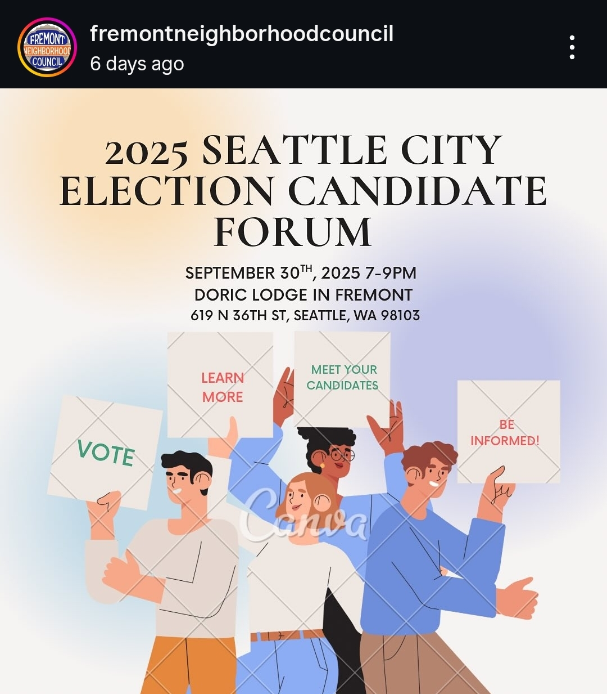

Today Mattie and I went to our local councils candidate forum to listen to our districts' city council candidates and mayorial candidates. It was insightful. It was a bit surreal for me because they had the credentialed candidates but the Fremont Community Council is a small independent organization that felt informal. They had some preparation, but a lot of it they just made up as they went along. Perhaps surprisingly this made it all feel a bit more accessible.
